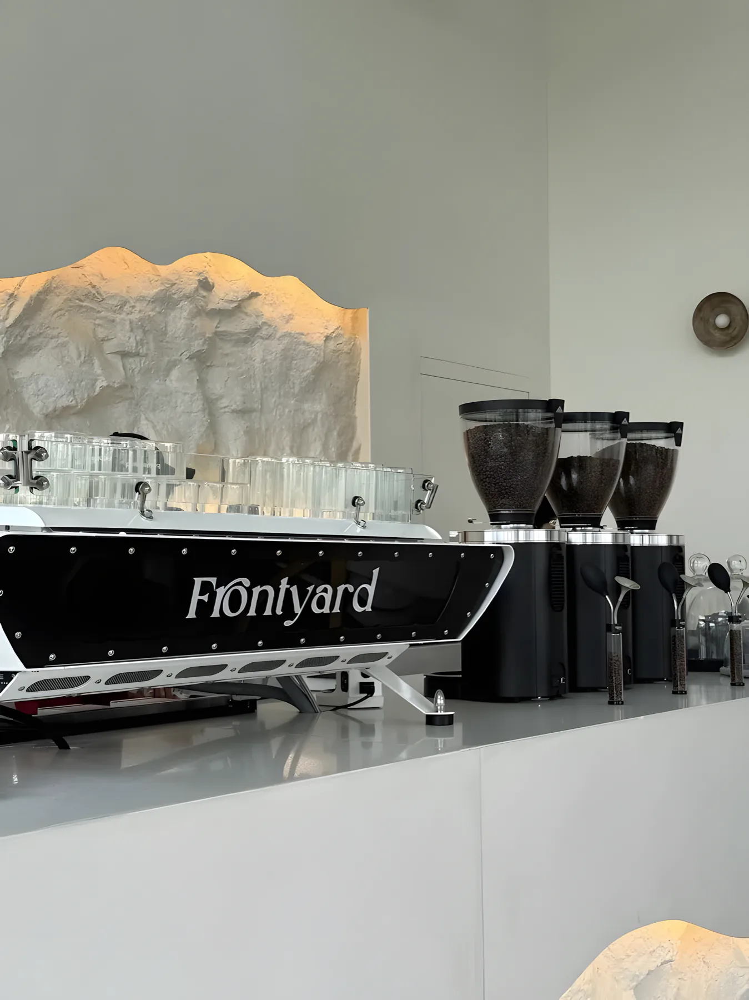
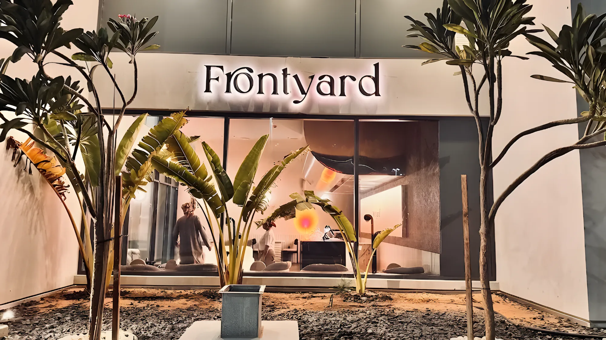

فرونتيارد، مقهى قهوة مختصة في أبوظبي
قهوة مختصة وماتشا وفطور طول اليوم على شاطئ الراحة، وتراسنا يطالع على مبنى الدار مباشرة. وفرعنا الثاني صار مفتوح في النهيان.
أكثر شي ينطلب
الأشياء اللي يرجع لها ضيوفنا ويذكرونها في تقييماتهم، من أول قهوة الساعة 7 الصبح لين حلى آخر الليل.
ماتشا
الفانيلا المملحة والفراولة، هذيلا اللي الناس يرجعون عشانهم.

سبانش لاتيه، ديرتي إسبريسو
من بار الإسبريسو، أو خذه معاك في كوب فرونت يارد الأحمر.

هوت تشوكلت
بعد الماتشا، أكثر مشروب يذكرونه في التقييمات.
بيض حلبي وأطباق الفطور
من مفضلات طول اليوم، مع التوست والكرواسون.

عصيدة
الحلى الإماراتي المعروف، ومن أكثر الحلويات اللي يمدحونها.
تيراميسو
اسمها يتكرر في التقييمات وحدة ورا الثانية.

لافا كيك وتشيز كيك
للمشاركة… أو لا.

طاولة مقابل مبنى الدار
المبنى الزجاجي الدائري اللي عبر الشارع هو مبنى الدار، وتراسنا على شاطئ الراحة يطالع عليه مباشرة. تعال الصبح للفطور، أو وقت الغروب، وهو الوقت اللي ينصح فيه ضيوفنا.
- الجلسات
- داخلية بكنب ونوافذ كبيرة، وخارجية على التراس
- الحيوانات الأليفة
- مرحّب فيها
- سهولة الوصول
- مواقف وجلسات مهيأة للكراسي المتحركة
- الأوقات
- من 7 الصبح لين 1 الفجر، كل يوم



البار
إسبريسو من المكينة اللي عليها اسمنا، وقهوة مقطرة توصلك للطاولة في إبريق زجاج، والماتشا اللي صار لها جمهورها.

ديرتي إسبريسو، سبانش لاتيه، قهوة مقطرة، ماتشا. اسأل الفريق شو يقترحون لك.
فرونت يارد بالأرقام
على magicpin من 931 تقييم. الفريق والماتشا والإطلالة، تتكرر في كل مرة.قائمة magicpin، أكتوبر 2026
فرعين مفتوحين في أبوظبي: شاطئ الراحة والنهيان. والجاي: القناة، ميناء العرب، وسي جيت في ميناء راشد.
من المطبخ


وين تلقانا
فرعين، نفس الأوقات، وكل فرع له رقمه. مفتوحين الحين
شاطئ الراحة
الدانة، شاطئ الراحة، مقابل مبنى الدار
الرمز CHRG+6QF، أبوظبي
من 7 الصبح لين 1 الفجر، كل يوم
قريبًا: القناة، ميناء العرب، وسي جيت في ميناء راشد بدبي.
